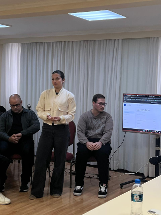

UX/UI
Mobile App
PawMatch
App que desburocratiza a adoção de pets — um ecossistema onde abrigos e adotantes interagem com transparência, do benchmark à alta fidelidade.
Ver projeto →PORTFÓLIO — 2026
Oi, eu sou a Julia! — UX/UI Designer com experiência em UX Research, testes de usabilidade, design responsivo e criação de interfaces acessíveis e escaláveis, unindo pensamento estratégico e foco no usuário.

Ajudo empresas a transformar ideias em produtos digitais que fazem sentido no mundo real. Seja desenhando um MVP, refinando uma experiência ou organizando um design system, meu foco é criar soluções úteis e duradouras.
Design Circuit
Formação intensiva em Product Design (UX/UI) focada no ciclo completo de produtos digitais.
Universidade Anhembi Morumbi
Tecnólogo em Design Gráfico — concluído.
Universidade Tecnológica Federal do Paraná
Licenciatura em Ciências Biológicas — concluído.
App que desburocratiza a adoção de pets — um ecossistema onde abrigos e adotantes interagem com transparência, do benchmark à alta fidelidade.
Ver projeto →Plataforma de treinamento imersiva e interativa para o setor B2B industrial — interface 3D de alta fidelidade integrada à Unity.
Ver projeto →Yardex
MISSIM
SouJunior
Boostech Tecnologia